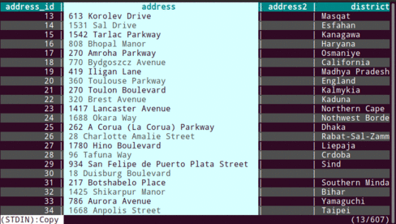
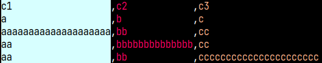
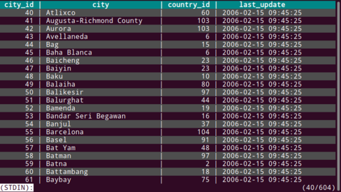
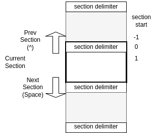
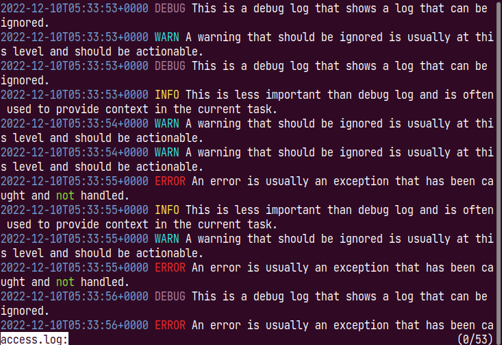

Powerful features that go far beyond less and more.
tail -f and tail -F — with sticky follow and per-section follow.Click a tab to explore different display modes.
Default view — open any file or pipe output from stdin.

Column rainbow mode — color-code columns in CSV/TSV and command output.

Align mode — automatically align columns for clean tabular output.

psql mode — built-in preset for PostgreSQL query output with fixed headers and column highlighting.

Section mode — split content into navigable sections using a delimiter pattern.

Multi-color highlight — assign a unique color to each search term simultaneously.
Available on every major platform.
brew install ov
sudo port install ov
# Download from https://github.com/noborus/ov/releases curl -L -O https://github.com/noborus/ov/releases/latest/download/ov_linux_amd64.deb sudo dpkg -i ov_linux_amd64.deb
sudo rpm -ivh https://github.com/noborus/ov/releases/latest/download/ov_linux_amd64.rpm
# Using yay or another AUR helper yay -S ov # build from source yay -S ov-bin # pre-built binary
nix profile install nixpkgs#ov
brew install ov
winget install -e --id noborus.ov
pkg install ov
# Latest release go install github.com/noborus/ov@latest # Latest commit from master go install github.com/noborus/ov@master
Up and running in seconds.
$ ov filename # pipe from stdin $ cat filename | ov # use as default PAGER $ export PAGER=ov
# Fix 1 header row $ ov --header 1 data.csv # Column rainbow for CSV $ ov --column-mode --column-delimiter "," --column-rainbow data.csv # Auto-detect columns (ps, df, etc.) $ ps aux | ov -H1 --column-width --column-rainbow
# Follow mode (like tail -f) $ ov --follow-mode app.log # Watch a file for changes $ ov --watch 1 /proc/meminfo # Execute a command and follow output $ ov --exec -- journalctl -f
# Start with regex search $ ov --regexp-search app.log # Filter: show only matching lines # Press & then type a pattern # Multi-color highlight # Press . then type words
General: TabWidth: 8 Header: 0 AlternateRows: false ColumnMode: false Wrap: "character" # "character" | "word" | "none" Style: Alternate: Background: "gray" Header: Bold: true SearchHighlight: Reverse: true ColumnRainbow: - Foreground: "white" - Foreground: "crimson" - Foreground: "aqua" - Foreground: "lime" - Foreground: "blue" - Foreground: "yellowgreen" Mode: psql: Header: 2 AlternateRows: true ColumnMode: true ColumnDelimiter: "|" mysql: Header: 3 AlternateRows: true ColumnMode: true ColumnDelimiter: "|"
How does ov compare to commonly used pagers?
| Feature | ov | less | more | bat | pspg |
|---|---|---|---|---|---|
| Large file (low memory) | ✔ | ✔ | ✘ | △ | ✔ |
| Fixed header rows | ✔ | ✘ | ✘ | ✘ | ✔ |
| Fixed header columns | ✔ | ✘ | ✘ | ✘ | ✔ |
| Column rainbow colors | ✔ | ✘ | ✘ | ✘ | ✔ |
| Incremental / regex search | ✔ | ✔ | △ | ✘ | ✔ |
| Multi-word highlight | ✔ | ✘ | ✘ | ✘ | ✘ |
| Follow mode (tail -f) | ✔ | ✔ | ✘ | ✘ | ✘ |
| Watch mode (periodic refresh) | ✔ | ✘ | ✘ | ✘ | ✘ |
| Compressed file support | ✔ | △ | ✘ | ✘ | ✘ |
| Syntax highlighting | ✘ | ✘ | ✘ | ✔ | ✘ |
| Customizable key bindings | ✔ | ✔ | ✘ | ✘ | △ |
| Sidebar | ✔ | ✘ | ✘ | ✘ | ✘ |
✔ supported · △ partial · ✘ not supported